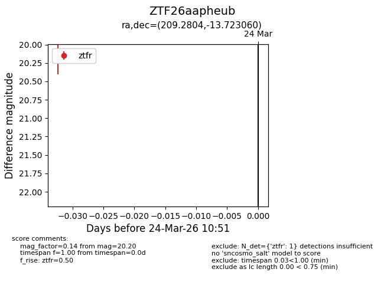
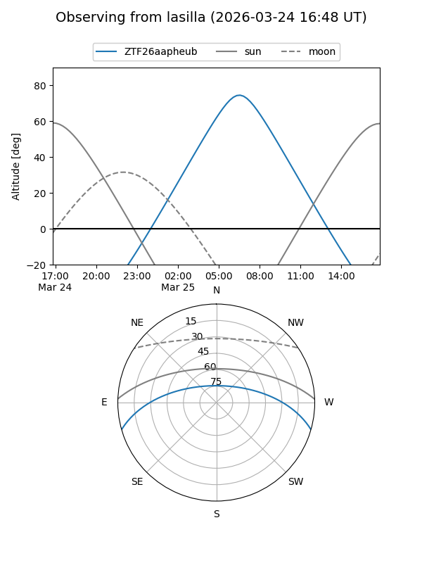
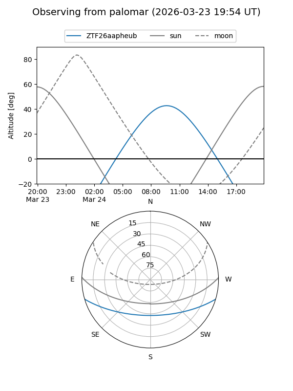

ZTF26aapheub
Target ZTF26aapheub at 2026-03-24 10:54
Aliases and brokers:
FINK: link
Lasair: link
ALeRCE: link
alt names
ZTF26aapheub (ztf,fink_ztf)
Coordinates:
equatorial (ra, dec) = 209.2804,-13.72306
equatorial (HMS+DMS) = 13:57:07.31,-13:43:23.02
galactic (l, b) = (326.2855,+46.14899)
Flags:
Photometry:
last ztfr=20.20
1 ztfr detections
Lightcurve

Visibility


Additional plots